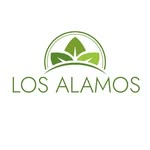

Rehabilitación Integral • Paraná, Entre Ríos

Kinesiología, Terapia Ocupacional, Estimulación Cognitiva y más. Un equipo interdisciplinario para acompañarte en cada etapa de tu rehabilitación.
Pedí tu turnoAtención integral para que recuperes tu independencia y calidad de vida.
Rehabilitación motora para pacientes con ACV y afecciones neurológicas. Recuperamos función y movimiento.
Facilitamos la autonomía en las actividades cotidianas. Adaptamos el entorno a tus capacidades.
Ejercitamos memoria, atención, concentración y funciones ejecutivas para mantener un cerebro activo.
Evaluación estandarizada de memoria, lenguaje, orientación y funciones ejecutivas con informe profesional.
Trabajamos con PAMI para que el acceso a la rehabilitación no sea un obstáculo. Consultanos tu cobertura.
Formación de cuidadores domiciliarios e institucionales del adulto mayor, en convenio con GUCA.
Tres pasos para iniciar tu proceso de rehabilitación.
Llamanos o escribinos por WhatsApp y contanos qué necesitás o qué le pasó a tu familiar.
Realizamos una evaluación integral para entender la situación y definir el mejor abordaje.
Diseñamos un plan de rehabilitación adaptado a tus objetivos y posibilidades reales.
Escribinos por WhatsApp o llamanos para coordinar tu primera consulta.
Escribir por WhatsApp